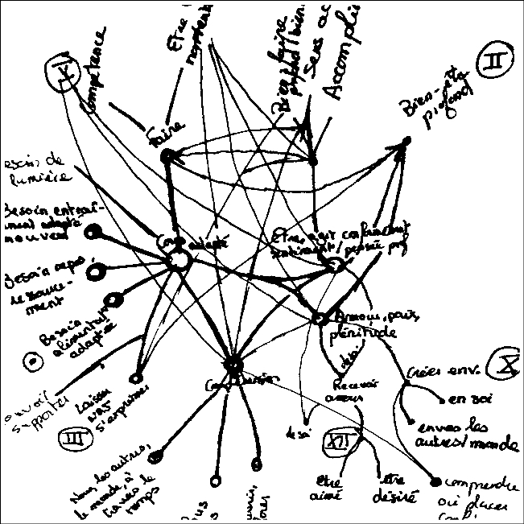
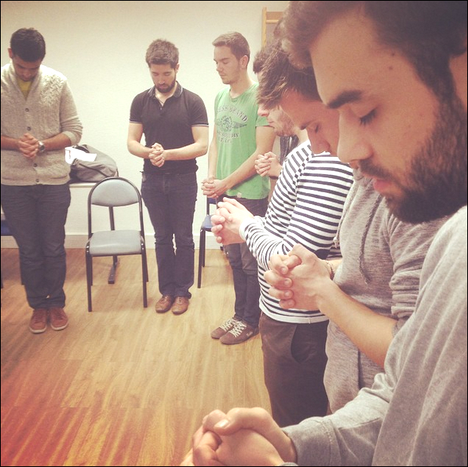

Thomas Wolff - ouverture du blog
Ouverture du blog
13 ans d’écriture de carnets papier
Voilà plus d’une dizaine d’années que je prends des notes quasi-quotidiennement, toujours sur papier blanc, toujours à l’écriture gel noire. Plongé dans ma cave, je reprends mon premier carnet de 50 pages que j’ai complété à seize ans sur la génération d’états d’absorption par la pratique de l’hypnose ericksonienne.Les découvertes de Milton Erickson (1901-1980) ont démocratisé les utilisations thérapeuthiques et cliniques de l’hypnose.
Contrairement à des pages statiques, ces écrits papiers voyagent et se transforment. J’ai mis à jour ce premier carnet il y a trois ans, lors d’un voyage de deux mois dans les Himalayas. Notes mises à jour depuis le Pangong Tso. Je voulais alors vérifier que des populations orientales vivant en haute montagne présentaient des mécanismes similaires que ceux mis en avant en occident.
La compréhension des mouvements et de ce qui les actionne m’intéresse plus que les catégorisations. Si catégoriser permet de voir, la compétence effective de mettre en mouvement me semble permettre une liberté d’action que la connaissance seule ne permettrait pas.
Et pour partager mes observations, j’aime proposer la pratique. Pour préparer un cours, il m’est commun de me replonger dans des carnets de notes, puis de proposer aux curieux l’expérience qui m’a permis de dégager mes hypothèses. Étudiants en exploration, mars 2015. Ci contre, à l’école d’ingénieurs du CESI, je me base sur les notes évoquées ci dessus pour proposer aux élèves d’observer sous hypnose leurs mécanismes psychologiques.
Engagements et aspirations
Début septembre, nous nous sommes retrouvés avec Stéphane Riot sur le tour du Ticket for change. Je n’étais présent que 4 jours, lui sur toute la durée du tour. Voila une année que nous avions envie d’échanger ensemble.
Toulouse. Pause de midi au tiers-lieu de La Serre. Stéphane Riot explore le futur (prospective), les mécanismes du changement et les dynamiques d’intelligence collective. Il co-anime, en plus de son activité d’enseignant et d’auteur, Noveterra. Sa facilité à entrer en relation profonde avec d’autres personnes, son regard qui semble considérer d’autres choses que moi, avait déjà attisé lors de notre première rencontre une année auparavant l’envie d’entrer en relation. Stéphane semble plutôt fatigué par le climat immersif du tour et nous décidons de nous en extraire durant le temps d’une rencontre et d’un repas. A l’ombre d’un hangar, nous nous asseyons dos contre dos sur un rondin de bois disposé là.
Nos pensées s’envolent. Nous échangeons en amis sur les difficultés à exprimer ces passions et visions qui - bien qu’elles sont le plus souvent considérées comme anormées - orientent notre manière de voir le monde et d’agir. Nous échangeons sur notre solitude, notre famille, nos amis. Lui s’est récemment engagé à rendre visible ces passions qui le motivent. Son humanité m’a beaucoup touché.
Dos contre dos, le temps passe. J’ai compris que tout comme il y a une différence entre souhaiter partir et partir effectivement, il y a une différence entre observer une qualité et y aspirer et observer une qualité et s’y engager.
C’est un moment particulier pour moi. Je quitte en décembre l’association Cpcoop que j’ai co-fondée et suis engagé depuis 4 ans, j’ai de nouvelles envies de créations dont les conditions sont favorables ou modifiables, et je vais bientôt être papa.
Je sens que c’est le bon moment pour ouvrir ce site et m’amuser.
Les annonces de nouveaux articles se font via mon espace twitter et en version plus tech via l’abonnement au dépôt github dédié.
A bientôt!